Cultura generale
46 schede in italiano sul tema «Cultura generale», pronte da stampare e con soluzioni.
46 materiali

Monheim am Rhein - Scheda - testo con spazi vuoti, comprensione all'ascolto e crucipuzzle

Neunkirchen - Scheda - testo con spazi vuoti, comprensione all'ascolto e crucipuzzle

Neve - Scheda - testo con spazi vuoti, comprensione all'ascolto e crucipuzzle

Panthera onca - Scheda - testo con spazi vuoti, comprensione all'ascolto e crucipuzzle

Plettenberg - Scheda - testo con spazi vuoti, comprensione all'ascolto e crucipuzzle
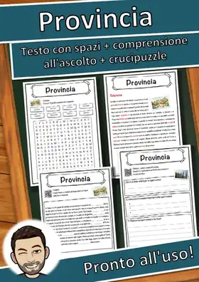
Provincia - Scheda - testo con spazi vuoti, comprensione all'ascolto e crucipuzzle
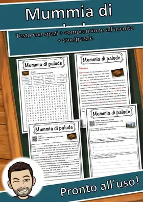
Mummia di palude - Scheda - testo con spazi vuoti, comprensione all'ascolto e crucipuzzle
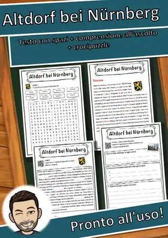
Altdorf bei Nürnberg - Scheda - testo con spazi vuoti, comprensione all'ascolto e crucipuzzle
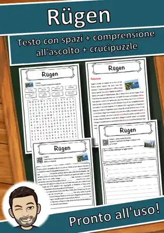
Rügen - Scheda - testo con spazi vuoti, comprensione all'ascolto e crucipuzzle
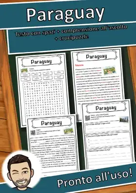
Paraguay - Scheda - testo con spazi vuoti, comprensione all'ascolto e crucipuzzle
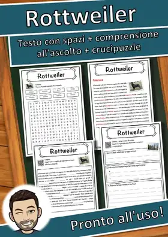
Rottweiler - Scheda - testo con spazi vuoti, comprensione all'ascolto e crucipuzzle
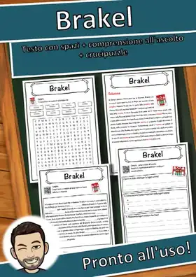
Brakel - Scheda - testo con spazi vuoti, comprensione all'ascolto e crucipuzzle
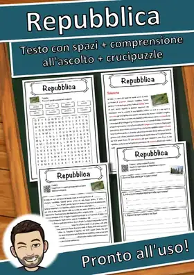
Repubblica - Scheda - testo con spazi vuoti, comprensione all'ascolto e crucipuzzle
Rhinocerotidae - Scheda - testo con spazi vuoti, comprensione all'ascolto e crucipuzzle
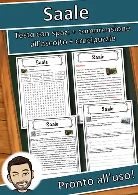
Saale - Scheda - testo con spazi vuoti, comprensione all'ascolto e crucipuzzle
Bopfingen - Scheda - testo con spazi vuoti, comprensione all'ascolto e crucipuzzle
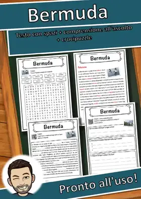
Bermuda - Scheda - testo con spazi vuoti, comprensione all'ascolto e crucipuzzle

Nuova Zelanda - Scheda - testo con spazi vuoti, comprensione all'ascolto e crucipuzzle

Poseidone - Scheda - testo con spazi vuoti, comprensione all'ascolto e crucipuzzle
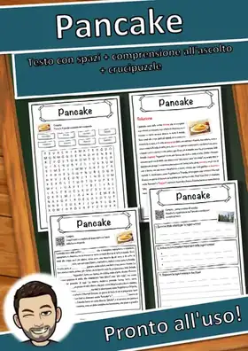
Pancake - Scheda - testo con spazi vuoti, comprensione all'ascolto e crucipuzzle
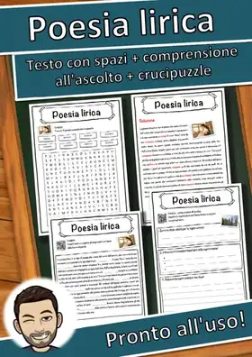
Poesia lirica - Scheda - testo con spazi vuoti, comprensione all'ascolto e crucipuzzle
Pagliaccio - Scheda - testo con spazi vuoti, comprensione all'ascolto e crucipuzzle
Autostrada - Scheda - testo con spazi vuoti, comprensione all'ascolto e crucipuzzle
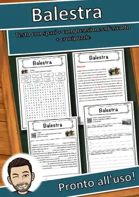
Balestra - Scheda - testo con spazi vuoti, comprensione all'ascolto e crucipuzzle
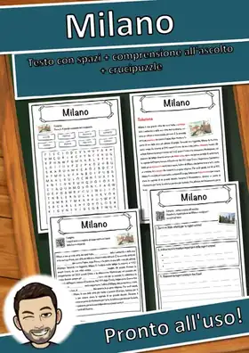
Milano - Scheda - testo con spazi vuoti, comprensione all'ascolto e crucipuzzle
Rudolstadt - Scheda - testo con spazi vuoti, comprensione all'ascolto e crucipuzzle

Bad Reichenhall - Scheda - testo con spazi vuoti, comprensione all'ascolto e crucipuzzle
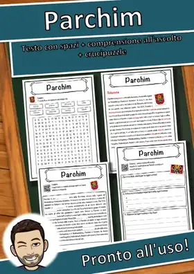
Parchim - Scheda - testo con spazi vuoti, comprensione all'ascolto e crucipuzzle
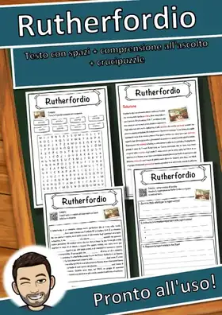
Rutherfordio - Scheda - testo con spazi vuoti, comprensione all'ascolto e crucipuzzle

Calw - Scheda - testo con spazi vuoti, comprensione all'ascolto e crucipuzzle
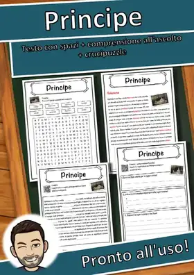
Principe - Scheda - testo con spazi vuoti, comprensione all'ascolto e crucipuzzle
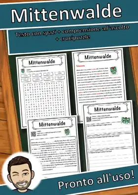
Mittenwalde - Scheda - testo con spazi vuoti, comprensione all'ascolto e crucipuzzle

Protestantesimo - Scheda - testo con spazi vuoti, comprensione all'ascolto e crucipuzzle
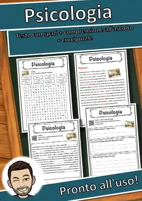
Psicologia - Scheda - testo con spazi vuoti, comprensione all'ascolto e crucipuzzle
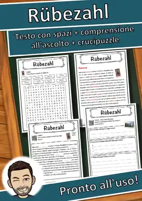
Rübezahl - Scheda - testo con spazi vuoti, comprensione all'ascolto e crucipuzzle
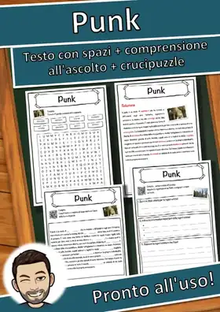
Punk - Scheda - testo con spazi vuoti, comprensione all'ascolto e crucipuzzle
Pentecoste - Scheda - testo con spazi vuoti, comprensione all'ascolto e crucipuzzle
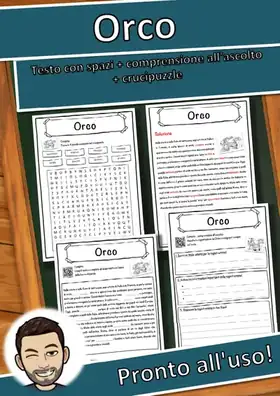
Orco - Scheda - testo con spazi vuoti, comprensione all'ascolto e crucipuzzle
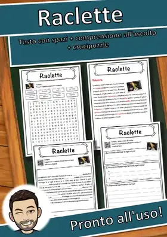
Raclette - Scheda - testo con spazi vuoti, comprensione all'ascolto e crucipuzzle
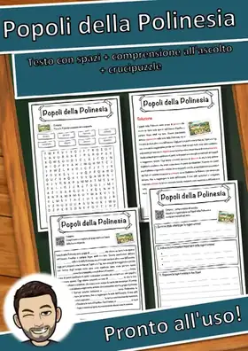
Popoli della Polinesia - Scheda - testo con spazi vuoti, comprensione all'ascolto e crucipuzzle

Chiosco - Scheda - testo con spazi vuoti, comprensione all'ascolto e crucipuzzle
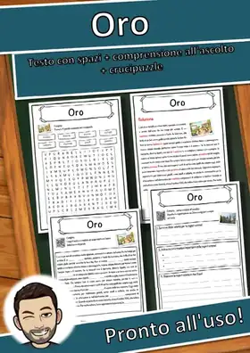
Oro - Scheda - testo con spazi vuoti, comprensione all'ascolto e crucipuzzle
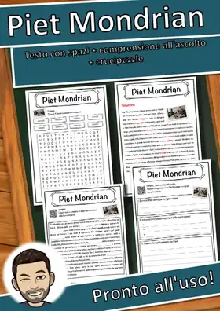
Piet Mondrian - Scheda - testo con spazi vuoti, comprensione all'ascolto e crucipuzzle
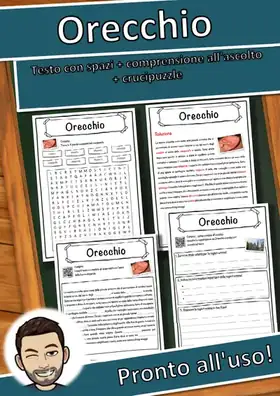
Orecchio - Scheda - testo con spazi vuoti, comprensione all'ascolto e crucipuzzle
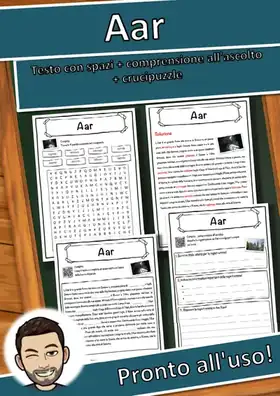
Aar - Scheda - testo con spazi vuoti, comprensione all'ascolto e crucipuzzle
Ingegnere - Scheda - testo con spazi vuoti, comprensione all'ascolto e crucipuzzle
Nessun materiale trovato: prova con un'altra parola o un altro filtro.